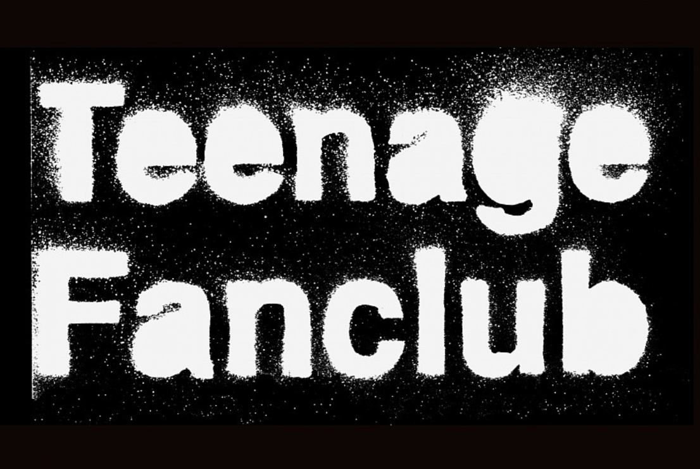
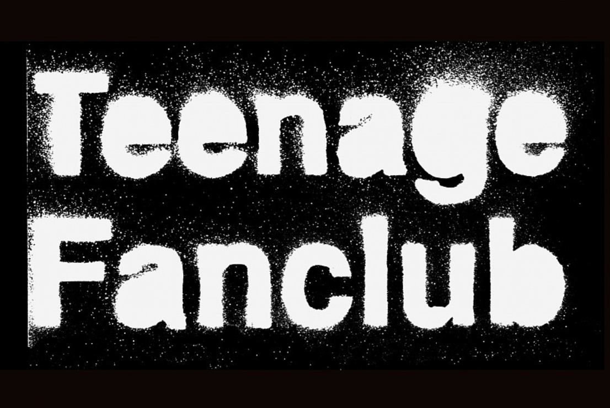
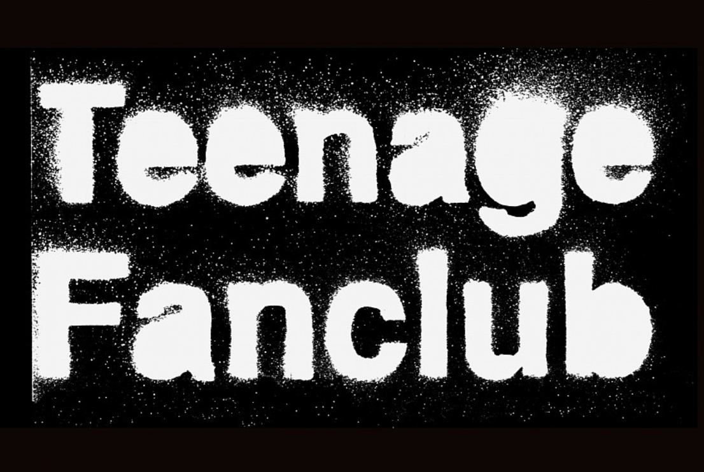

The Greatest Band that Nobody Has Heard Of
 


Teenage Fanclub are an indie pop group out of Bellshill, Scotland. They formed in 1989 with members Norman Blake, Raymond McGinley, Gerard Love, and Brendan O'Hare.They were discovered through the C86 music scene is Glasgow, Scotland. C86 was a cassette compilation released by NME magazine to promote bands on independent music labels.
The biggest influence on Teenage Fanclub is the 70's power pop group Big Star. They are often considered the reincarnation of Big Star. Other heavily influences are Californian bands such as the Beach Boys and the Byrds. Teenage Fanclub's sound early in their career was characterized by loud distorted guitars and heavinly melodies.They were eventually signed to Creation records and went on to create one of the finest string of albums of the 1990's. Teenage Fanclub has continued to this day and still actively tour Europe.
Since their inception, they have amassed a cult following that consists mostly of middle aged men and women. But, they continue to inspire generations of bands to this day. Kurt Cobain, singer and songwriter from Nirvana, championed them the "best band in the world" on multiple occasions. Even Liam Gallagher from the Manchester band Oasis claimed that they were "the second best band in the world, behind Oasis". Their influence is widespread and runs deep, although they remain a low-key cult band.
Members
- Raymond McGinley
- Norman Blake
- Gerard Love
- Brendan O'Hare
| Teenage Fanclub's 90's Albums | |
|---|---|
| Bandwagonesque | Thirteen |
| Grand Prix | Songs From Northern Britain |